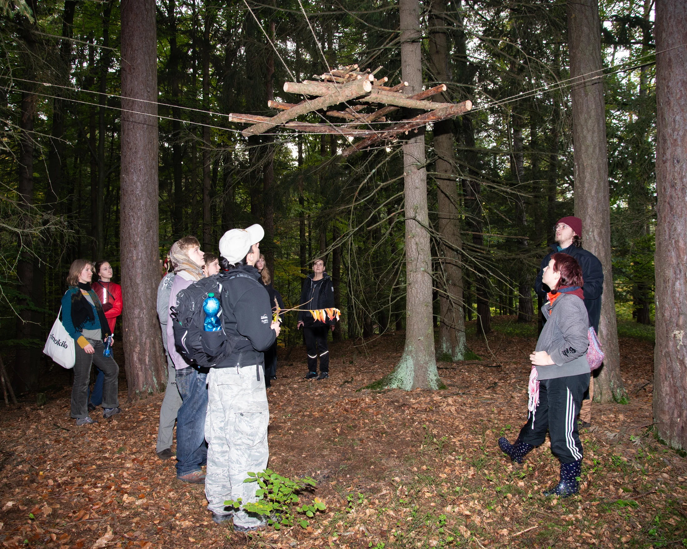
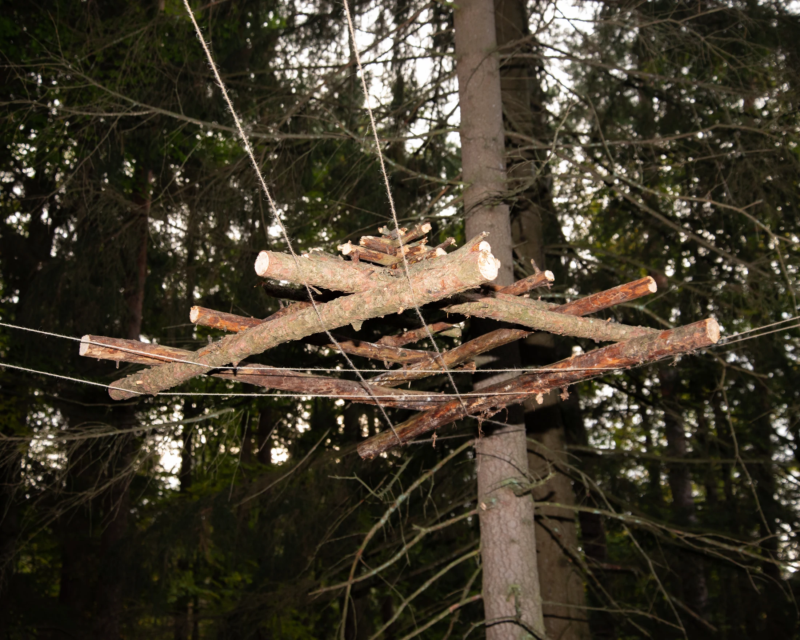
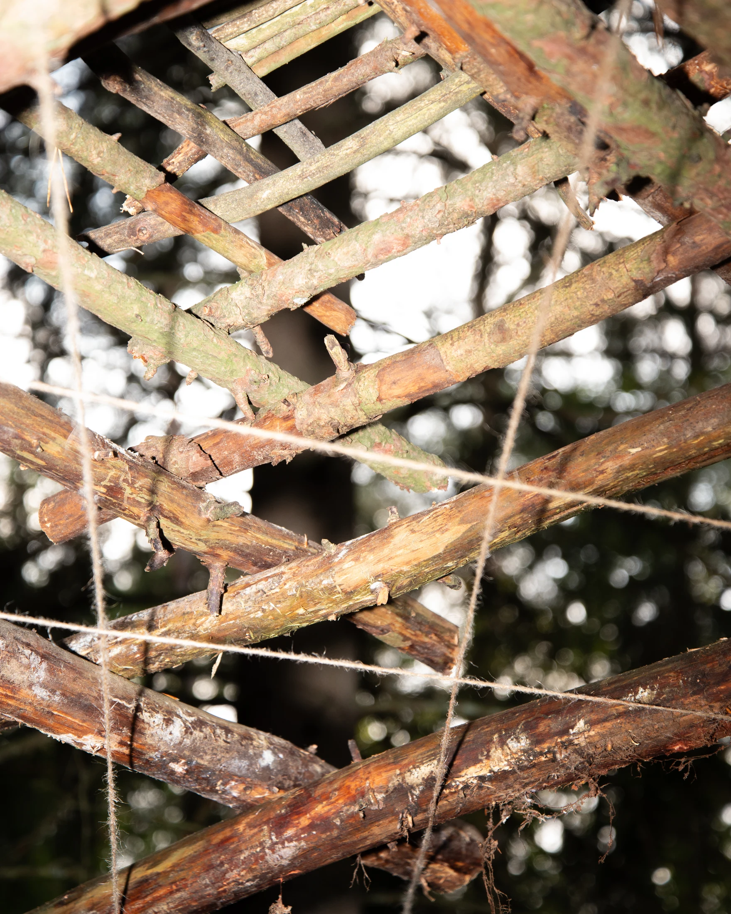
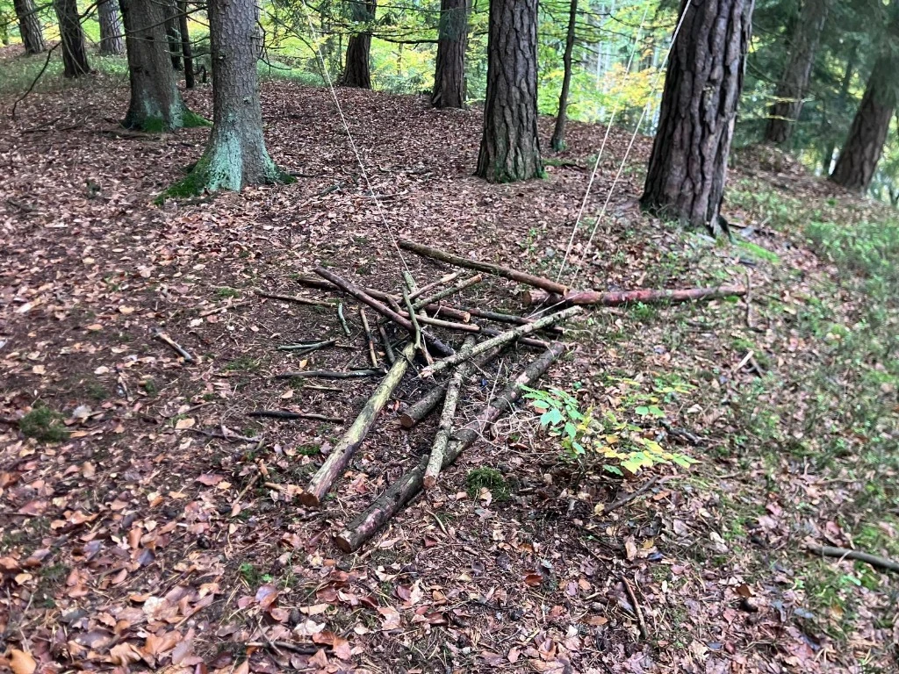

Pagoda
3D scan landartové instalace Pagoda. Inspirací bylo propojení s přírodou skrz různé rituály jako oheň. Ty nás můžou vrátit do momentů z minulosti, avšak jen vzpomínkou. Jutový provázek jsem napnul mezi čtyři stromy do X, a na ně postupně naskládal nařezané dřevo na pagodu. Ta je cca. 2,5 metrů vysoká, takže při natažení se jí nemůžete dotknout. Také ji můžete pozorovat ze spoda a sledovat ornament dřeva z pohledu netypického pro táborový oheň.
Fotografie
vyfotil: Alois Martínek


